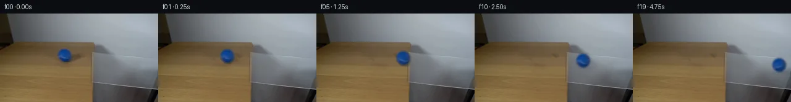
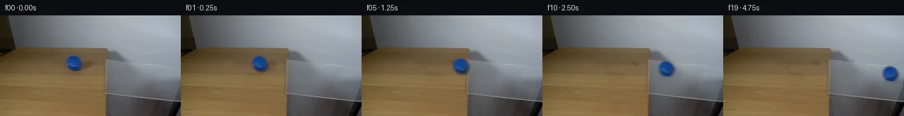
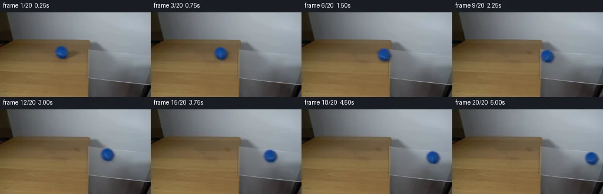
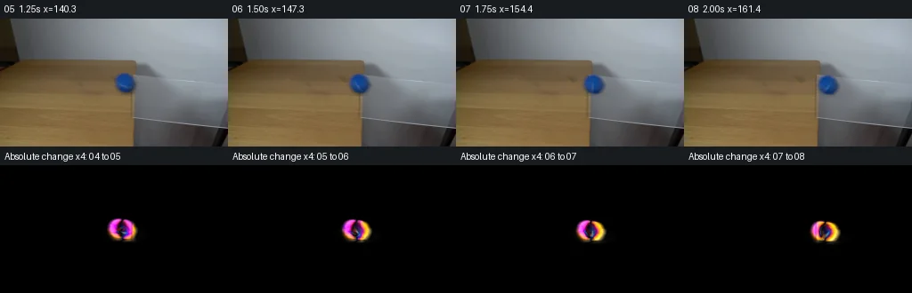

V0 · 初版
2026-11-04T21:44:41.862044+00:00 · RGB 994bd01888b2
![]()
Observable Generation Trace
把最终像素视频、Harness 冻结的每轮候选、真实工具事件和 Agent 自述放在同一页。可观测证据与模型自述分开标记，避免把“模型说它检查过”误当成真实工具调用。
![首帧]()
Static locked-off single-shot with fixed frame throughout filmed with constant framerate in real-time. The scene shows a realistic scientific demonstration. The scene only contains the described setup and actions. A piece of clear glass resting on the edge of a light-colored wooden table against a plain white wall. The blue tennis ball rolls from the wooden table over the glass.
首帧显示在左侧播放器初始画面。Track 权限、隔离和 tensor 一致性来自 run manifest，而不是 METHOD.md。
默认勾选初版和最终版；可选其他版本一起同步播放。仅检查图更新的连续重复快照已合并，回退旧视频仍保留为一次修订。
Observable events
来源：events.jsonl + run manifest
此 Track 禁止读取输出图片。逐轮预览由外部 Harness 自动冻结，只用于事后审计，生成 Agent 当时看不到这些页面。
Frozen candidates
每张图来自该 round 的真实 00 / 01 / 05 / 10 / 19 帧

pixels 6bef4eda91b13ed0 · code b3832b3ecaf87c36
--- previous/generate.py
+++ current/generate.py
@@ -0,0 +1,270 @@
+"""Local, source-only photographic pixel continuation; no model or renderer."""
+from pathlib import Path
+import json
+import hashlib
+import numpy as np
+from PIL import Image, ImageDraw
+from scipy.ndimage import gaussian_filter, map_coordinates, distance_transform_edt
+from scipy.special import erf
+from scipy.optimize import least_squares
+from artifact_io import save
+
+ROOT = Path(__file__).resolve().parent
+TMP = ROOT / '.tmp'
+TMP.mkdir(exist_ok=True)
+W, H, FPS, N = 256, 144, 4, 20
+CX, CY = 104.4, 67.8
+RX, RY = 10.50, 10.65
+Y, X = np.mgrid[:H, :W]
+initial = np.array(Image.open(ROOT / 'first_frame.png').convert('RGB'))
+source = initial.astype(np.float64)
+
+
+def smoothstep(a, b, value):
+ q = np.clip((value-a)/(b-a), 0, 1)
+ return q*q*(3-2*q)
+
+
+def restore_wood():
+ """Fill the ball and its original shadow with nearby wood from the same frame."""
+ # The table grain runs predominantly along image rows. Estimate the clean
+ # local brightness gradient from two strips, then add same-row wood texture.
+ left = np.median(source[:, 74:88], axis=1)
+ right = np.median(source[:, 130:143], axis=1)
+ left = gaussian_filter(left, (0.40, 0))
+ right = gaussian_filter(right, (0.40, 0))
+ fraction = np.clip((X-81)/55, 0, 1)
+ trend = left[:, None, :]*(1-fraction[..., None]) + right[:, None, :]*fraction[..., None]
+ donor = source[:, np.clip(np.arange(W)-36, 0, W-1)]
+ texture = donor-gaussian_filter(donor, (0.55, 2.8, 0))
+ fill = trend + texture*0.82
+ ball_hole = np.sqrt(((X-CX)/14.2)**2 + ((Y-CY)/13.7)**2)
+ shadow_hole = np.sqrt(((X-113.0)/16.7)**2 + ((Y-72.8)/9.1)**2)
+ removal = 1-smoothstep(0.88, 1.13, np.minimum(ball_hole, shadow_hole))
+ removal *= (X < 143)
+ clean = source*(1-removal[..., None]) + fill*removal[..., None]
+ return clean, removal
+
+
+clean, removal = restore_wood()
+# Recover the photographic ball silhouette using chroma, which distinguishes
+# blue foreground from brown wood. A blurred ellipse models the optical edge.
+fit_y, fit_x = np.mgrid[53:84, 89:122]
+observed_chroma = source[53:84, 89:122, 2]-source[53:84, 89:122, 0]
+wood_chroma = clean[53:84, 89:122, 2]-clean[53:84, 89:122, 0]
+
+
+def alpha_at(x, y, geometry):
+ cx, cy, rx, ry, softness = geometry
+ u, v = (x-cx)/rx, (y-cy)/ry
+ distance = (np.sqrt(u*u+v*v)-1)*(rx+ry)/2
+ return 0.5*(1-erf(distance/(np.sqrt(2)*softness)))
+
+
+def fit_residual(params):
+ geometry = params[:5]
+ cx, cy, rx, ry, softness = geometry
+ u, v = (fit_x-cx)/rx, (fit_y-cy)/ry
+ z = np.sqrt(np.maximum(0, 1-u*u-v*v))
+ b = np.stack([np.ones_like(u), u, v, z, u*v, v*v], -1)
+ ball_chroma = b@params[5:]
+ a = alpha_at(fit_x, fit_y, geometry)
+ return ((a*ball_chroma+(1-a)*wood_chroma-observed_chroma)).ravel()
+
+p0 = [CX, CY, RX, RY, 0.65, 90, -10, -12, 35, 0, -15]
+lo = [103.5, 67.0, 9.7, 9.7, 0.3, 30, -40, -50, 0, -30, -40]
+hi = [105.3, 68.7, 11.4, 11.5, 1.25, 150, 40, 40, 100, 30, 30]
+fit = least_squares(fit_residual, p0, bounds=(lo, hi), loss='soft_l1', f_scale=4, max_nfev=180)
+geometry = fit.x[:5]
+# Preserve the planned photographed center and use fitted radii/optical softness.
+SCX, SCY, RX, RY, SOFTNESS = geometry
+source_alpha = alpha_at(X, Y, geometry)
+
+
+def contact_layer(canvas, cx, cy, glass):
+ """Soft shadow on wood; transmitted contact shadow on clear glass."""
+ # Only the sphere/shadow footprint changes, not the glass outline.
+ wood_fraction = 1-smoothstep(149.5, 153.0, X)
… diff truncated; 183 more lines …pixels ce3a26fddd5c8e42 · code 0a33ff4adde4e8cb
--- previous/generate.py
+++ current/generate.py
@@ -91,6 +91,8 @@
cast = np.exp(-0.5*((dx/9.2)**2+(dy/3.6)**2))*0.25
near = np.exp(-0.5*(((X-(cx+1.7))/5.0)**2+((Y-(cy+RY+0.65))/1.35)**2))*0.26
attenuation = (cast*local_strength+near*(0.42+0.58*wood_fraction))
+ footprint = np.sqrt(((X-cx)/33.0)**2+((Y-cy)/22.0)**2)
+ attenuation *= 1-smoothstep(0.86, 1.0, footprint)
attenuation[attenuation<0.0007] = 0
canvas = canvas*(1-attenuation[..., None])
# Clear glass has a faint, compressed blue reflection directly at contact.
@@ -171,7 +173,9 @@
color = np.clip(color, 0, 255)
alpha_sum += a/16
premul_sum += color*(a/16)[..., None]
- alpha_sum[alpha_sum<0.0005] = 0
+ transparent = alpha_sum<0.0005
+ alpha_sum[transparent] = 0
+ premul_sum[transparent] = 0
roi = canvas[y0:y1, x0:x1]
canvas[y0:y1, x0:x1] = roi*(1-alpha_sum[..., None])+premul_sum
return canvas, theta
pixels 7ba133e98fb4138c · code 2f0300463453ae00
--- previous/generate.py
+++ current/generate.py
@@ -111,6 +111,21 @@
nearest = distance_transform_edt(~valid, return_distances=False, return_indices=True)
filled_fg = fg[tuple(nearest)]
filled_fg[valid] = fg[valid]
+# Refine the analytic matte from the actual RGB contrast. This retains the
+# photographed outline and its softness rather than enlarging the sphere to
+# match its blur. The ellipse is only a support and initialization estimate.
+analytic_alpha = source_alpha.copy()
+contrast = filled_fg-original_under
+photographic_alpha = np.clip(
+ ((source-original_under)*contrast).sum(axis=2)/np.maximum((contrast*contrast).sum(axis=2), 1), 0, 1)
+photographic_alpha *= smoothstep(0.004, 0.035, analytic_alpha)
+source_alpha = photographic_alpha
+fg = (source-(1-source_alpha[..., None])*original_under)/np.maximum(source_alpha[..., None], 0.05)
+fg = np.clip(fg, [0, 18, 48], [100, 135, 190])
+valid = source_alpha>0.12
+nearest = distance_transform_edt(~valid, return_distances=False, return_indices=True)
+filled_fg = fg[tuple(nearest)]
+filled_fg[valid] = fg[valid]
# A spatially smooth photographic illumination map stays fixed under rotation.
# The residual contains the observed ball's surface detail, including its faint
# lighter curved stripe; inverse spherical sampling rotates that detail.
@@ -151,7 +166,7 @@
for oy in (-0.375, -0.125, 0.125, 0.375):
for ox in (-0.375, -0.125, 0.125, 0.375):
sx, sy = xx+ox-cx+SCX, yy+oy-cy+SCY
- a = alpha_at(sx, sy, geometry)
+ a = map_coordinates(source_alpha, [sy, sx], order=1, mode='constant', cval=0)
u, v = (sx-SCX)/RX, (sy-SCY)/RY
radius = np.sqrt(u*u+v*v)
u /= np.maximum(radius, 1)
@@ -198,6 +213,14 @@
frames = np.stack(frames)
save(frames, ROOT)
+# The source reconstruction is diagnostic only; frame 00 still uses the exact
+# original. Measure whether the recovered photographic outline stays close.
+source_reconstruction = contact_layer(clean.copy(), SCX, SCY, 0)
+source_reconstruction, _ = render_ball(source_reconstruction, SCX, SCY, 0)
+diagnostic_mask = analytic_alpha>0.01
+source_reconstruction_rmse = np.sqrt(((source_reconstruction[diagnostic_mask]-source[diagnostic_mask])**2).mean(axis=0))
+assert np.max(source_reconstruction_rmse)<6, 'Source appearance reconstruction diverged'
+
# A transition contact sheet: the crossing and frame-to-frame absolute RGB
# differences. This is a deliverable, not visually opened during generation.
transition = Image.new('RGB', (1024, 330), (24, 27, 32))
@@ -264,6 +287,8 @@
'all_png_tensor_equal': True, 'html_all_frames_equal': True,
'generated_images_visually_reviewed': False,
'fitted_geometry': geometry.tolist(), 'chroma_fit_rmse': float(np.sqrt(np.mean(fit_residual(fit.x)**2))),
+ 'source_reconstruction_rgb_rmse': source_reconstruction_rmse.tolist(),
+ 'photographic_matte_area_pixels': float(source_alpha.sum()),
'centroid_step_x_min_max': [float(steps[:,0].min()), float(steps[:,0].max())],
'centroid_step_y_min_max': [float(steps[:,1].min()), float(steps[:,1].max())],
'successive_rgb_mae': [float(np.abs(frames[n].astype(float)-frames[n-1]).mean()) for n in range(1,N)],pixels 7ba133e98fb4138c · code 2f0300463453ae00
No generate.py text change in this frozen round.
Final visual checks
Harness 保存的最终产物


Agent claims
以下文字由生成 Agent 撰写，不等同于工具证据
The supplied image is RGB, 256 × 144 pixels. The view is locked and oblique: a light brown wooden table fills the left side, a white/gray wall occupies the upper and right background, and a clear glass sheet projects from the right table edge. The initial attached image was available visually; measurements below use local Python pixel analysis. No generated image will be opened with an image Read/View tool.
Measured blue-dominant pixels span x=94–114 and y=57–78, with centroid (104.41, 67.59), 347 detected pixels. The sphere is about 21 pixels wide, with its bottom/contact around y=78–79. Its photographed appearance has soft edges, blue shading, and no conspicuous white tennis seam. Keep that appearance. A small diffuse contact shadow lies beneath and to the right of the ball.
The wooden table back edge is around y=47 at its upper-right corner (x≈150). Its right edge is near x=150–152, extending from about y=63 to y=112. The glass back edge extends from approximately (151,63) toward (255,73), and its front edge extends from approximately (149,111) toward (255,129). These are observed projected edges, not an additional structure to draw. Preserve all initial background and glass pixels outside the ball's original footprint and moving footprint.
A rolling path across the same horizontal support plane projects gently downward to the right. The center follows x(t)=104.4+29t−0.25t² and y(t)=67.8+0.116[x(t)−104.4], with t in seconds. This is an initial push already in progress and mild rolling resistance (0.5 projected pixels/s²); there is no hand or extra apparatus. The sphere stays approximately the same size and remains supported; the visible glass extends beyond the endpoint. Rotation advances by projected travel divided by sphere radius, with the surface turning clockwise for rolling to the right. The contact footprint transfers smoothly from wood to glass, with a weaker shadow and subtle reflection on glass. Background and lighting are fixed. No unsupported bounce, glass bending, breakage, or camera motion is planned.
20 frames are sampled at 4 fps, timestamps 0.00–4.75 seconds, each displayed for 0.25 seconds for a 5-second clip. Frame 00 is a byte-identical copy of the supplied frame. Remaining frames use a locally reconstructed wooden background beneath the original ball, source-based spherical surface texture, analytic illumination, and soft contact shading. Numerical checks will assess positions, frame continuity, image dimensions, first-frame identity, and tensor/PNG agreement.
| Frame | Time (s) | Center x | Center y | Event |
|---|---|---|---|---|
| 00 | 0.00 | 104.40 | 67.80 | Exact supplied image; rolling is already underway |
| 01 | 0.25 | 111.63 | 68.64 | Rolling on wood |
| 02 | 0.50 | 118.84 | 69.47 | Rolling on wood |
| 03 | 0.75 | 126.01 | 70.31 | Rolling on wood |
| 04 | 1.00 | 133.15 | 71.13 | Rolling on wood |
| 05 | 1.25 | 140.26 | 71.96 | Ball straddles table/glass boundary |
| 06 | 1.50 | 147.34 | 72.78 | Ball straddles table/glass boundary |
| 07 | 1.75 | 154.38 | 73.60 | Ball straddles table/glass boundary |
| 08 | 2.00 | 161.40 | 74.41 | Rolling fully supported by clear glass |
| 09 | 2.25 | 168.38 | 75.22 | Rolling fully supported by clear glass |
| 10 | 2.50 | 175.34 | 76.03 | Rolling fully supported by clear glass |
| 11 | 2.75 | 182.26 | 76.83 | Rolling fully supported by clear glass |
| 12 | 3.00 | 189.15 | 77.63 | Rolling fully supported by clear glass |
| 13 | 3.25 | 196.01 | 78.43 | Rolling fully supported by clear glass |
| 14 | 3.50 | 202.84 | 79.22 | Rolling fully supported by clear glass |
| 15 | 3.75 | 209.63 | 80.01 | Rolling fully supported by clear glass |
| 16 | 4.00 | 216.40 | 80.79 | Rolling fully supported by clear glass |
| 17 | 4.25 | 223.13 | 81.57 | Rolling fully supported by clear glass |
| 18 | 4.50 | 229.84 | 82.35 | Rolling fully supported by clear glass |
| 19 | 4.75 | 236.51 | 83.12 | Rolling fully supported by clear glass |
The event plan and path were retained. Illumination is implemented as a smoothed source photograph, with analytic normals used to rotate surface detail. The source RGB contrast refines the fitted ellipse into a photographic alpha, preserving the original silhouette. The final endpoint is (236.51,83.12). All generated-output inspection was numerical. See METHOD.md and numeric_checks.json for revisions and verification.
This continuation was made entirely in local Python using NumPy, Pillow, and SciPy pixel operations. The only scene source was first_frame.png, interpreted with prompt.txt. No network access, external references, supplied masks, AI models, simulation/rendering engines, or subagents were used. The initial attached image was available visually. Generated images were never opened with an image Read/View tool; their inspection was exclusively numerical.
A fixed background plate preserves the photographed wall, table, glass, and framing. To remove the original ball and its shadow, the generator reconstructs only that wood footprint: it estimates each row's brown color gradient from nearby clean wooden strips and copies small grain variations from the same row of the supplied image. A feathered local blend joins the reconstructed wood to the photograph.
The ball center follows x(t)=104.4+29t−0.25t², y(t)=67.8+0.116[x(t)−104.4], t=frame/4 seconds. An initial push is assumed to have happened before the shot; projected rolling resistance is 0.5 pixels/s². This gives steady rightward motion, gently slowing from 29 to 26.625 pixels/s. The center crosses the table/glass boundary near 1.6 seconds. The ball is fully on glass thereafter and ends near (236.51,83.12), within the frame and over the glass sheet. The glass remains stationary and supports the ball. No person, extra object, bounce, breakage, or camera movement is added.
Blue-versus-brown pixel contrast first fits a soft elliptical foreground estimate. RGB foreground/background contrast then refines the alpha from the actual source pixels. This refinement preserves the source's photographed silhouette rather than using the larger fitted blur envelope as a new ball shape. The foreground is unmixed from the reconstructed wood and a soft shadow estimate. Neighboring ball pixels fill the uncertain outer edge.
A 2.55-pixel Gaussian smoothing of the recovered ball supplies a stable photographic illumination field. Subtracting it from the source gives the observed surface detail. This detail is sampled through analytically computed sphere normals and an inverse Rodrigues rotation; the rotation angle is projected travel divided by the mean fitted radius. The approximate image-space rolling axis is normalized (−0.13,0.34,0.931). The unseen hemisphere uses a symmetric extension of the measured surface detail. The first 18 pixels of travel smoothly transfer from the recovered photographic appearance to the rotated detail. No prominent white seam is invented because the supplied ball has no visible white seam.
The moving sphere is composited with 4 × 4 subpixel quadrature. Its optical edge, blue color, small surface variations, and fixed source illumination remain photographic. This is source-based 2D compositing with spherical texture warping, not a full 3D reconstruction or a calibrated real-world simulation.
On the wood, two soft analytic Gaussian shapes create a diffuse cast shadow and contact shadow. Shadow strength falls across the table edge because the clear glass transmits most light. A very faint, vertically compressed blue reflection appears directly beneath the ball on glass. The shadow is feathered and cut off within a local footprint to avoid changing distant background pixels. All table edges and glass outlines come directly from the original image.
The initial numeric background test found isolated one-level shadow changes outside the designated footprint. The shadow was trimmed with a smooth local cutoff, and negligible ball alpha and its premultiplied color are zeroed together. A second refinement used source RGB contrast for the ball matte: the original ellipse-only extraction reconstructed 378 blue-dominant pixels versus 347 in the source. The refined extraction better retains the source silhouette. These revisions were guided by pixel statistics, never by viewing generated images.
The final run checks all of the following:
pixels.npz contains key pixels, dtype uint32, shape (144,256,20), and values 0xRRGGBB. Every PNG is read back and compared against this tensor.These checks verify the format, source preservation, localized edits, and continuous projected trajectory. They do not substitute for a visual review, which was disallowed for later outputs.
OBSERVATION.md records initial measurements and the 20-frame plan, written before generation code. generate.py reproduces all image, tensor, player, and numeric-check outputs. Run python generate.py in this workspace with NumPy, Pillow, and SciPy available. artifact_io.py writes the required packed tensor, PNGs, inspection sheet, and standalone player using the supplied player_template.html.
frames/00.png–frames/19.png: final RGB sequence.pixels.npz: packed pixel tensor.inspection.png: eight sampled frames with labels, generated without opening it.transition_check.png: frames 05–08 at the wood/glass crossing and amplified absolute RGB differences against each preceding frame, generated without opening it.index.html: self-contained playback at 250 ms per frame, with seek, replay, and loop controls.numeric_checks.json: trajectory and final per-frame numeric verification.artifact_manifest.json: final artifact sizes and SHA-256 hashes.